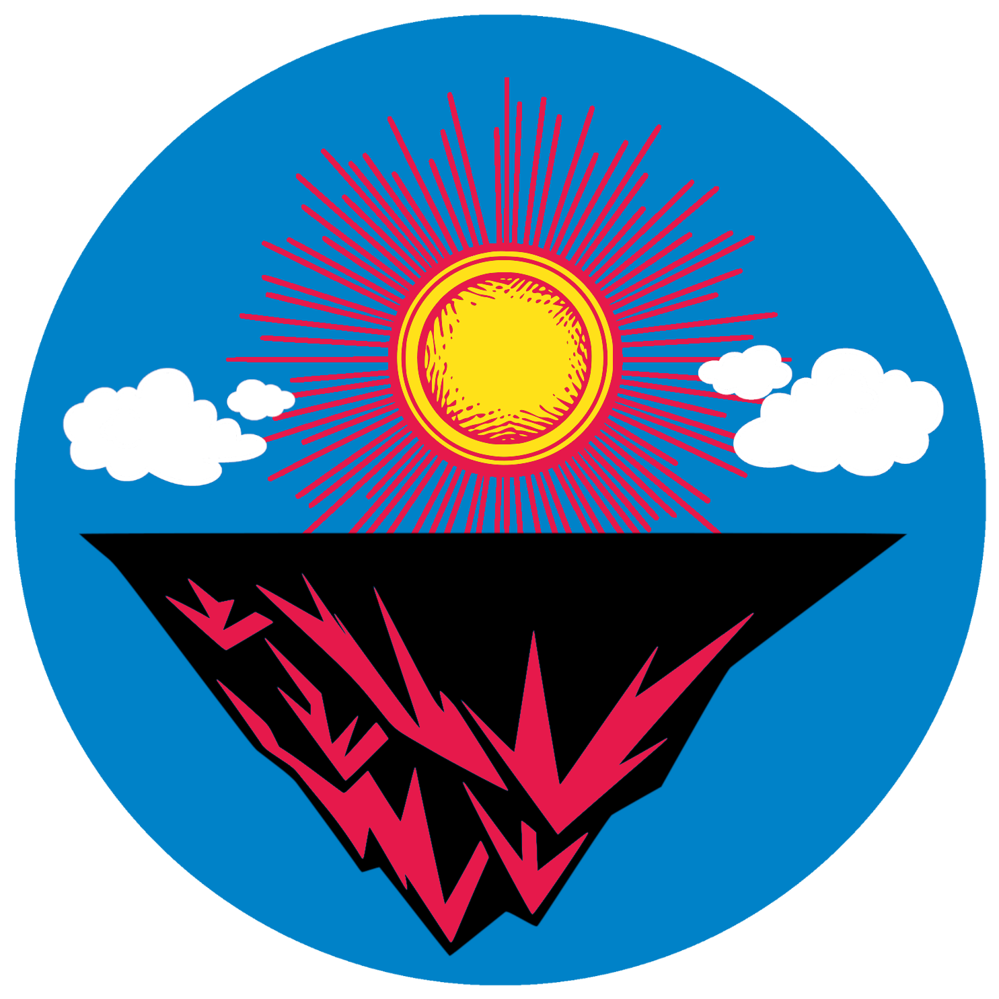
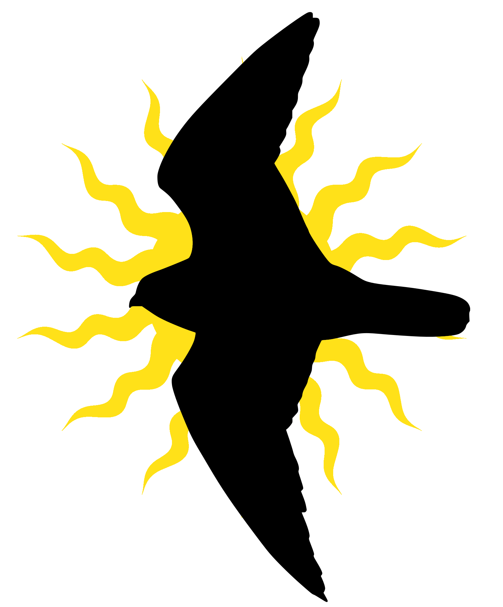
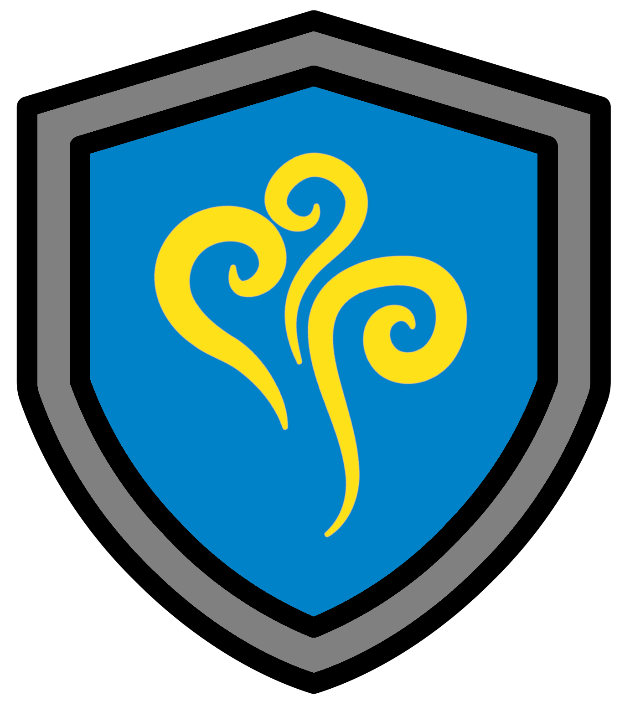
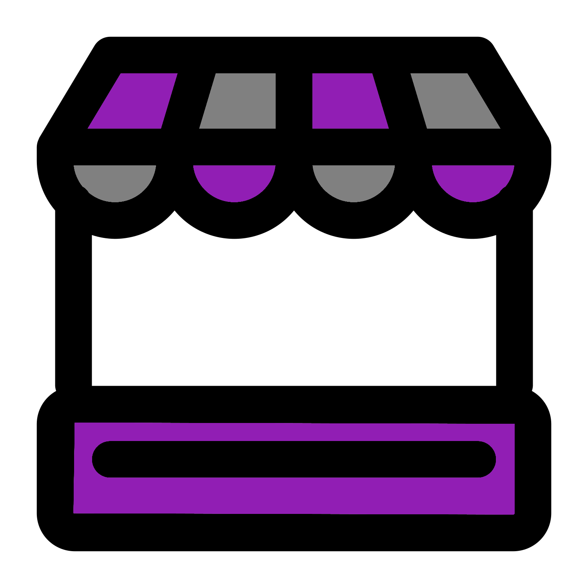
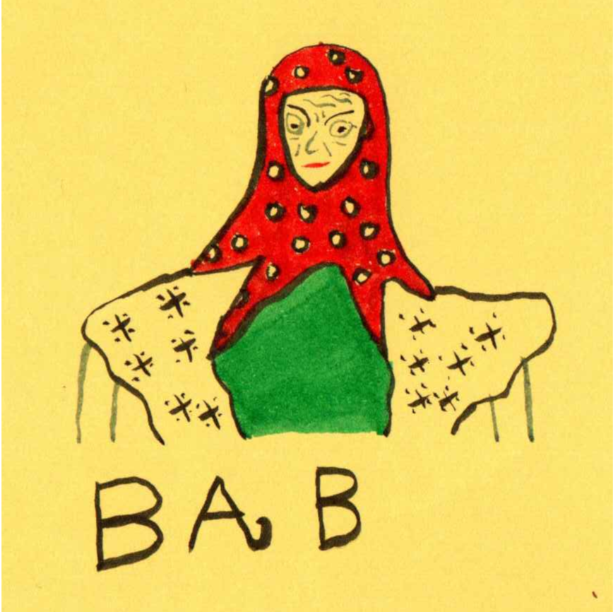
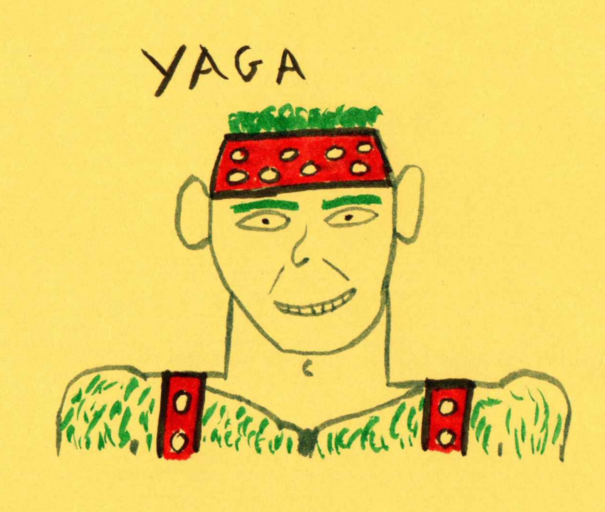

SKYWOODS

The SKYWOODS is an archipelago of sky bound islands high above the WINDWOODS. Their unnaturally flat tops bely their true origin, upside down mountain tips. They come from the mountains of the REDWOODS, now a range of mesas. Their previous lives are evident by their foundations, rough and tapering to the once mountain tip.
Endemic life
Life struggles at the high altitudes of the SKYWOODS. But where many struggle, few thrive. These survivors have adapted in specific ways, giving rise to unique species on the different islands.
Giant groundsels
{kind=link}
The islands are littered with various species of Giant groundsels. These large flowering plants are easily mistaken for small trees. The top is adorned with a radial pattern of thick elliptical leaves curving up to the skies. Below this is a black/brown mass of these leaves, dead. This mass growing larger the closer to the top as the leaves layer on top of each other.
Birds

The main animal life, aside from insects, comes in the form of birds. Other animals were unable to colonise the SKYWOODS and so variosu birds settled and adapted to the floating islands. Some birds became flightless whilst others retained their flight.
These birds eat:
- The fruit and leaves of the Giant groundsels
- Insects that depend on the Giant groundsels
- Plants and creatures from the lands below
- Other birds in and around the SKYWOODS
Protection from Amazonia

One solace the inhabitants of these sky Islands have is the high winds. Although inconvenient in many ways, it has kept AMAZONIA away as her drones cannot fly in the high winds. However, there are rumours of mercenaries descending on this world who are more than happy to obey AMAZONIA commands with monetary payment.
Central Island
The central floating of the SKYWOODS is inhabited by humanoid villagers who have engineered the land. A flat central village, Summitville, is surrounded by stepped hills used as multiple levels of farmland.
The villagers worship NYXMERA who keeps the winds strong in the WINDWOODS and allows the SKYWOODS to keep aloft. There are 2 main types of villages, the farmers and the traders.
The village is also hosting many refugees that have been displaced by Amazonia. This includes humans, and various sentient anthropomorphic animals such as the Gigantopithecuses from the REDWOODS.
Farmers
{kind=link}
The farmers tend the terraced hills growing crops and livestock that are suited to high altitudes. They all share the land, helping each other but also specialising in a specific crop/livestock. They are hard workers but love to unwind with food, drink, and entertainment they perform for each other.
| D6 | Name | Crops/Livestock | Appearence | Entertainment |
|---|---|---|---|---|
| 1 | Anglin | Coffee | Wears beautiful multicoloured ponchos stained with coffee | Part of a troupe of acrobatic dancers |
| 2 | Earthstar | Onions, Garlic, and Leeks | Incredibly tall with a long nose and chin that run parallel to each other | Puppetry |
| 3 | Icarus | Yak | A relaxed GOAT TROLL covered in Yak furs | Story teller with a preference of tales of the Primeval Deities |
| 4 | Magni | Herbs, Beans, Kale, Cabbage, and Bok Choy | Long spider leg like fingers | Part of a play troupe |
| 5 | Piaggio | Tomatoes, Melons, Berries, and Rhubarb | Three eyes coloured yellow, grey, and purple | Aeromancy. Able to devine the past, present, and future by reading the sky. |
| 6 | Zeppelin | Beets, Potatoes, Carrots, and Parsnips | Broad torso and large chubby cheeks | Plays a large array of strange woodwind instruments |
Traders

Many traders live in the Village within the Central Plateau. They travel the lands trading the goods created by them and the farmers. They each have their own bird house they use as their house and travelling shop. Rather than bartering in currency most bartering on this world is done through goods, services, and entertainment. Traders prefer to offer specialised services rather than entertainment.
At the start of each new day roll 2D6 to determine which traders are currently in the Village (do no re roll duplicates). They are very busy trading and helping refugees escape Amazonia.
| D6 | Name | Service | Appearance | Preferred goods to acquire and sell |
|---|---|---|---|---|
| 1 | Chu | Cobbler | Pale and gangly they always sport a sleepy expression | Musical instruments |
| 2 | Doak | Knitter | Messy red hair frames a face covered by large shaded specs | Furniture |
| 3 | Flettner | Masseur | A Gigantopithecus from the REDWOODS. The hair on their head is braided with flowers. | Fruit, jam, and honey |
| 4 | Irkut | Medicine | Bald with botanical stains over their hands and the crown of their head | Herbs & poultices |
| 5 | Trendak | Ceramics repair (similar to Kintsugi) | Hunched figure with arms made of the night sky containing bones of gold | Precious gems, metals, and jewellery |
| 6 | Vortech | Transport & Delivery | Quiet and short they always wear a captains hat | Books and specimens on the plants and insects of the world |
Bab & Yaga
 
Possibly the most important community members of Summitville are Bab, Grandma of Yaga, and Yaga, Grandson of Bab.
Yaga is a ginger young man. Built like a log he always has his furry torso on display through thick suspenders that keep his tool belt and hemp trousers aloft. He quite likely has a handsome face but it is obscured with thick finely braided hair. Even through all this his bright eyes show through. Its easy to see he is always smiling whilst building houses or having tea with his grandma.
Many will see a hag, a crone, and a witch when their eyes feast upon the folkloric Bab. This impression will not be softened by her manic enthusiasm for combining birds with all manner of inanimate objects. Once you get past your preconceptions you will behold a wise kind woman gone childish with age. She is most at peace when enthralled in her work, listening to the music from her lyrebird based gramophone, or sharing tea with her grandson.
Quests
Bab and Yaga will help the players by building a Bird house for them. They want AMAZONIA stopped and see potential in the PCs.
The Bird house is a chimera of birds and house. Being able to travel by leg and wings they are invaluable to the traders and will be invaluable to the PCs.
However, Bab needs the birds and will therefore set the players to gather one at a time, the PCs choosing which one to go on. These quests are:
- Get a TROLL VULTURES from Gourd Island for its large wings
- Get a Lyrebird from Fork Island to be able to communicate with the house
- Get a White Stork from Tryp Island for it ability to rebuild itself
- Get an Elephant bird from Jungle island for its large and strong legs
BIRD HOUSE
14HP 1 ARMOR
- Strong log cabin (1 ARMOR)
- Massive wings a vulture capable of flight (as fast as a small propeller plane)
- Legs of an Elephant bird large & strong enough for locomotion (can sprint at speed of a Jeep)
- Head is of sentient Lyrebird that sticks out as the horn of a gramophone in the main room
- Able to fully heal itself after a mission
FOWL’S MOVING CASTLE: Created by the woodwork of Bab and the Witchcraft of Yaga this Bird based house is sentient. It is able to understand basic commands. It will not tolerate any abuse and demands a lot of affection. Although it can speak a little it much prefers to make pitch perfect sound effects with its Lyrebird vocal organ (syrinx) to communicate.
Downtime and upgrades
Between quests the players can relax in the village, make friends with Bab, Yaga, and the other villagers. The PCs can also help out the villagers, including Bab and Yaga. If they help, their final Bird House could have some upgrades.
The referee/GM is encouraged referee to give a minimum of 1 and a maximum of 4 upgrades. Additionally, it is encouraged to collabortate with the players on the shape and utility of these upgrades. Some suggestions are:
- Hardened wood: Increase ARMOR from 1 to 2
- Specialised work stations: This could be for chemistry, tinkering, medicine, weaponsmithing etc.
- Mounted harpoon gun: 1D6 DAMAGE, can hook onto vehicles and other objects
- Paragliders: Allows for aerial drops
Minor Islands
Floating around the Central island are the minor islands. They are constantly moving making it impossible to travel by foot.
To travel to an Island the PCs either need a method to travel a few miles through incredibly windy conditions or ask a trader for transport. A trader will help the PCs to get to the island and back via their BIRD HOUSE every other day. In other words the PCs have a rest day after coming back from one island.
Gourd Island
An Island inhabited by GOAT TROLLS, TROLL VULTURES, and the Gourd Groundsels. Aside from these the only other life includes flying bugs too small to be noticed by these massive inhabitants.
When the GOAT TROLLS lived in the WINDWOODS they would regularly play fight with members of their community. Of course when you can perfectly regenerate (as long as there is no fire or acid involved) this leads to many lost limbs. The largest and bravest vultures capitalised on these opportunities.
By consuming the flesh of GOAT TROLLS the vultures rapidly mutated into TROLL VULTURES. Massive regenerating vultures able to carry the weight of a GOAT TROLL due to the high winds of the WINDWOODS. The 2 species partnered together making their new home on Gourd Island and hunting and scavenging the surrounding lands.
Gourd Island was not just useful due to its elevation but also due to its flora. The Gourd Groundsels are engorged with all the water they can capture on the island, leaving none for any other creatures, except the GOAT TROLLS and their animal companions. You will never see a GOAT TROLLS without the gourd they strap to their backs. Used to quench the thirst of themselves and their vultures.
They occasionally trade one of their TROLL VULTURES to other humanoids. This may be in exchange for a quest or for an amazing hunting weapon.
Fork Island
Two main features are apparent when entering this island. The first is the thin and tall bifurcated groundsels with their forked leaves. The second is the cacophony of noises. The buzzing of insects, the winds rustling the leaves, and most importantly the Lyre birds.
The Lyre birds sing their songs, attempting and succeeding in being the lead vocals. They yell their sharp loud pitches for a variety of reasons. They concuss any predatory birds foolhardy enough to hunt them. They make beautiful melodies to attract mates and use their volume to scare off the competition. But possibly most importantly of all, through their mastery of pitch and recreating any sound imaginable they can play the key song of the leaves of the forked groundsels.
The leaves of the forked groundsels act as super precise tuning forks. Each leaf has a specific sound with a specific tone, pitch, and decibel that will activate it. Once activated the leaf will franticly vibrate and eventually fall off the tree. These forked leaves being a major source of nutrition for the forked lyrebirds.
Tryp Island
The island’s surface is littered with large holes. These lead to one large hole found at the very bottom. These tunnels act as a wind funnel, air sucked from the bottom and blown out the surface.
The strong upward winds causes many rocks and clods of dirt to float up in the air.
White storks are able to construct strong nests of rocks, dirt, & wood. These houses are tied to the incredibly tall giant groundsels that wave erratically in the wind.
The White storks feed on bugs that are sucked up by the massive hole at the bottom of the island. They also eat voles and frogs found on the surface of the Island as well as hunting on the surrounding islands.
Jungle island
As the name suggests this island is covered in thick vegetation made of a variety of Giant groundsels. It is the largest island and about the size and .
Within the jungle Mountain fowl eat bugs and vegetation. The Mountain Fowl are in turn ate by the Tall Pelicans. The Tall Pelicans keep their prey in their leathery throat pouches till they return to their nests on various small floating islands.
The reason for this is simple, they use their prey as an offering to the massive predatory HORROR BIRDS of the jungle. Unable to fly whilst in the thick jungle they found the best defence was to appease their predators. Better to live and starve than to die satiated.
Within the jungle there are small lakes with aggressive Geese even the HORROR BIRDS stay away from.
Through not as noisy as Fork island their are many Macaws within the tree tops. They mimic the voices of creatures and humans that have traversed the jungle. This can include the PCs, Mountain fowl, Tall Pelicans, and, Elephant birds.
HORROR BIRD
20HP 0 ARMOR TAC:+1 | FRC:+2 | RFX:-1 | CRE:-1
- Akin to a Terror bird but larger
- Carnivorous
- Large claws and beak (1D6+3 DAMAGE)
- Solitary hunters
VENAL: The HORROR BIRD is a massive creature that seems terrifying and they are. However, they primarily use their size and power to bully others. They fight members of their own species for territory. They intentionally seek other creatures who have captured prey to intimidate and steal their kill. They tend to let down their guard around creatures they appear to have successfully intimidated.